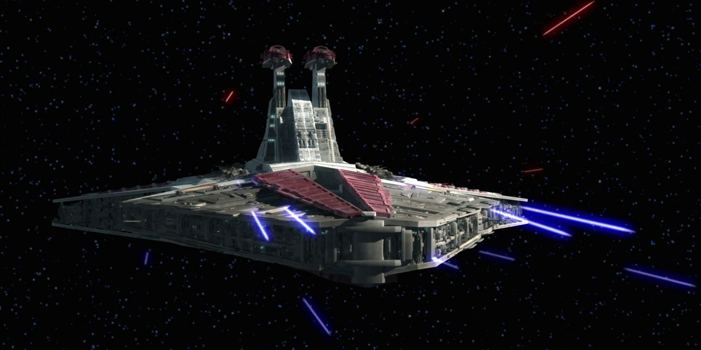
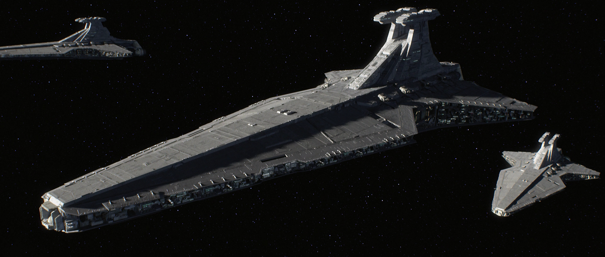
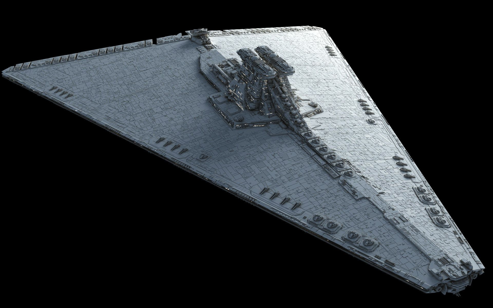
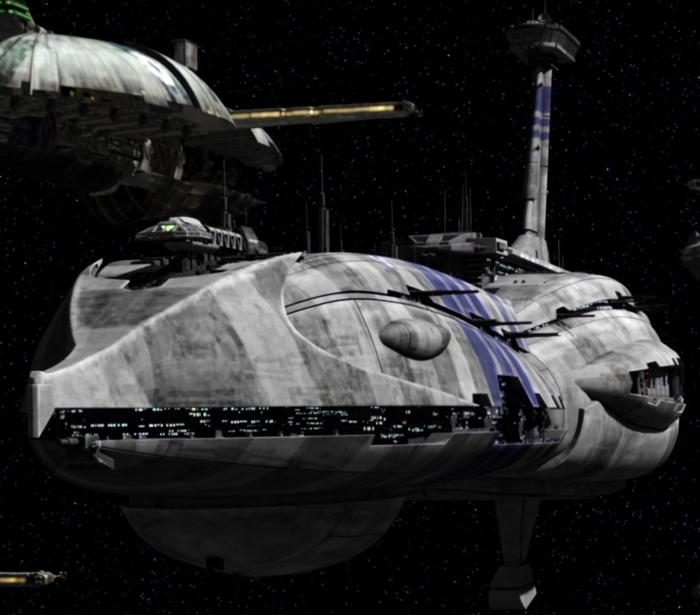

Звёздный разрушитель типа «Венатор»
Характеристики
Производитель: Kuat Drive YardsДлина :1137 метров
Ширина :548 метров
Высота :268 метров
Экипаж: 7400 человек
Десант (пехота): 2000
Десант (техника) :40 тяжелых спидеров, 24 шагохода
Скорость:около 40 MGLT
Максимальная скорость в атмосфере: 975 км/ч
Гипердвигатель 1 класса, резервный гипердвигатель 12 или 15 класса
Дальность полета: 60 000 световых лет
Автономность: 2 стандартных года
Цена: в 50-59 млн. кредитов
Вооружение
8 двуствольных тяжелых турболазеров DBY-827 в башнях установленные по 4 на левом и правом борту
2 двуствольных средних турболазера, размещенные на гранях в передней части корпуса
52 легкие скорострельные лазерные пушки
4 пусковые установки. Суммарный боезапас: 64 протонные торпеды
6 проекторов притягивающего луча
Ангар:420 МЛА (истребителей и бомбардировщиков) и до нескольких десятков LAAT Типичная авиагруппа корабля во время Войны Клонов состояла из: 192 истребителя V-19 или Альфа-3 "Нимбус" (16 стандартных эскадрилий) 192 легких перехватчика Eta-2 (16 стандартных эскадрилий) 36 тяжелых истребителя-бомбардировщика ARC-170 (3 эскадрильи) 
История
Почти тысячу лет относительного мира Старая Республика фактически не имела собственного военного флота, полностью опираясь, в деле поддержания галактического порядка, на локальные вооруженные силы и, иногда, на джедаев или «карманные» войска Министерства Юстиции. Но, несмотря на это, до Войны Клонов и сразу после ее начала, руководство государства сумело организовать проектирование и постройку новых типов кораблей в предельно короткие сроки. Одним из новых боевых звездолетов стал Звездный Разрушитель типа «Венатор», удачно совмещавший в себе функции ударного авианосца и линейного крейсера. Корабль был спроектирован под руководством молодого, амбициозного и весьма талантливого инженера Лиры Блиссекс (Lirа Blissex), которая приходилась дочерью не менее известному инженеру Валексу Блиссексу (Walex Blissex) создавшему для республиканского флота Звездный Разрушитель типа «Победа» и несколько моделей истребителей. «Венотор» в отличие от большинства боевых кораблей Республики и КНС, не был переоборудованным гражданским судном и изначально создавался как военный корабль. Следуя доктрине навязанной Республике флотом Конфедерации Независимых Систем (КНС), «Венатор» был больше авианосцем, чем линейным кораблем дополняя пушки главного калибра (ГК) своей многочисленной авиагруппой. Именно истребители и бомбардировщики были главной ударной силой «Венатор». Однако, как показала война, эти корабли хорошо себя показали и в линейном бою против кораблей КНС, превосходя их в мощи главного калибра, представленного восемью тяжелыми турболазерами DBY-827 и четырьмя торпедными пусковыми установками. Большая часть внутреннего пространства корабля (около 60% всей длины) была отведена под один огромный ангар, разделенный на равные отсеки снабженные переборками, бронированными раздвижными створками и силовыми полями. Переборки нужны были для большей защищенности летательных аппаратов от огня противника. Ведь если был пробит один из отсеков, истребители во втором оставались невредимыми и с ними мог без проблем продолжать работать технический персонал. Бронированные створки также служили дополнительной защитой каждого отсека. Это было особенно важно, когда авианосец открывал основные створки «оголяя» весь ангар. Силовые поля были нужны для поддержания атмосферы (удерживания воздуха). Каждый отсек вмещал в себя несколько челноков или истребителей (иногда численностью до эскадрильи) и мог в случае необходимости закрываться бронированной створкой. При необходимости переборки между отсеками могли убираться внутрь корпуса, увеличивая внутреннее пространство ангара. Корабль также имел два боковых шлюза со своими ангарами которые закрывались двумя бронированными створками. Эти дополнительные ангары служили для приема/отправки челноков и других легких транспортных судов. Еще один большой ангарный вход находился на «брюхе» корабля. Такое размещение ангаров позволяло упростить и ускорить погрузку/разгрузку боевой техники и десантных групп. Управление полетами осуществлялось с командного пункта, находившегося у основания ангара (ближе к башням капитанского мостика). Звездный Разрушитель Венатор Запуск истребителей и бомбардировщиков мог осуществляться несколькими способами. Основным считался запуск авиагруппы через створки основного ангара, открывавшихся по всей его длине. С одной стороны это позволяло, за короткое время выпустить в космос всю авиагруппу, но с другой делало ангар очень уязвимым для пушек вражеских кораблей, торпед и бомб бомбардировщиков. Если запуск производился во время боя, под огнем противника, иногда целесообразнее было использовать выход на «брюхе» авианосца. Такой запуск МЛА (малых летательных аппаратов) требовал больше времени, но зато корабль не рисковал получить шквал торпед в уязвимый ангар. Стоит заметить, что в ходе Войны Клонов много авианосцев было потеряно из-за желания их капитанов быстрее выпустить авиагруппу. Противник, сумев вовремя среагировать, уничтожал корабли скоординированным огнем. Также отмечу, что использование боковых ангаров и центральных раздвижных створок впоследствии, при проектировании Звездных Разрушителей типа «Император» (ИЗР) было признано нецелесообразным и даже опасным. Поэтому ИЗРы использовали только ангар в нижней части корпуса. Однако не лишним будет отметить, что некоторые командиры умудрялись удачно выпускать авиагруппу через раздвижные створки и под огнем противника. Например, во время битвы за Рилот, для безопасного выпуска авиагруппы адмирал Юларен развернул свой авианосец «брюхом» к противнику прикрыв, тем самым, истребители и бомбардировщики корпусом корабля. Шаг рискованный, но оправданный. Я не зря уделил пристальное внимание методам запуска авиагруппы. Ведь скорость выпуска МЛА напрямую влияет на время реакции, как авианосного корабля, так и целого авианосного соединения на изменения тактической обстановки. Во время боя корабль также принимал активное участие в сражении, используя свое сильное артиллерийское вооружение. Главным калибром «Венатор» были, как уже отмечалось, двуствольные турболазеры DBY-827. Это оружие располагалось на верхней части корпуса корабля по четыре турели на левом и правом борту. Такое размещение позволяло достаточно эффективно использовать «Венаторы» в качестве линейного корабля (то есть в составе линейного строя). Хотя стоит сказать, что «Венатор», как линейные борта, сильно уступали ЗР «Победа» (ПЗР) и, тем более, ИЗРам мощность главного калибра которых на 30% превосходила силу выстрела пушек DBY-827. К тому же на ИЗРе было 64 ствола ГК против 16 у «Венатора». Еще одним достаточно мощным оружием корабля были два двуствольных турболазера размещенные на гранях в передней части корпуса. Эти пушки имели довольно большой сектор стрельбы (около 150 градусов) и могли вести огонь как по фронту, так и в направлении кормы. Для противостояния большому числу истребителей и бомбардировщиков сепаратистов корабль был вооружен 52 легкими и скорострельными лазерными пушками. Кстати, по количеству зенитного вооружения, «Венатор» не имел себе равных среди всех военных кораблей, когда-либо носивших обозначение Звездный Разрушитель. Большая часть легких пушек размещалась вдоль «граней» корабля, что давало им хороший сектор стрельбы. Еще некоторое количество находилось вдоль центрального ангара. Они прикрывали МЛА во время запуска и улучшали защиту ангара во время боя. Также эти пушки могли перехватывать ракеты и торпеды. авианосец республики Полезным нововведением Лиры и ее отца стал интерьер капитанского мостика, впоследствии ставший привычным для Звездных Разрушителей многих проектов (в особенности ЗР «Император» и СЗР «Палач»). Основной персонал мостика размещался в двух «ямах» по бокам от центрального прохода и капитанского кресла. Правая башня «Венатора» была главным мостиком, в котором находился капитан, операторы локаторов, пункт управления огнем и другие посты. В левой башне находился центр управления полетами занимавшийся тактической координацией действий авиагруппы. Основной реактор «Венатор», в отличие от ПЗР и ИЗР был скрыт внутри корпуса. С одной стороны это улучшило его защищенность, а с другой заняло много полезного пространства. Основной реактор дублировался двумя дополнительными реакторами, которые были установлены в спонсонах авианосца (выступающие элементы корпуса по бортам в задней части корабля). Гипердвигатель «Венатора» находился в кормовом отсеке (в «хвосте»). «Венатор» имел возможность входить в атмосферу и осуществлять посадку на поверхности планет. Для посадки могли использоваться даже неподготовленные площадки (любое ровное пространство достаточного размера). Но приземления на планету производилась крайне редко и были сопряжены с большой сложностью. Поэтому капитаны кораблей предпочитали садиться только на специально оборудованные площадки (как, например, на Корусканте в III эпизоде – прим. автора). При необходимости осуществить десантную операцию, капитаны отдавали предпочтение высадке войск десантными судами, не желая приближаться к поверхности планеты на близкое расстояние и этим подвергать корабль опасности быть сбитым огнем с земли средствами противокосмической обороны (ПКО). джедайский крейсер 
Применение
За время Войны Клонов, «Венатор» стали основным боевым кораблем республиканского флота, так как лучше отвечали потребностям времени, чем Звездные Разрушители типа «Победа». Строительство кораблей шло поистине ураганными темпами. На сборку нового «Венатора» подготовленной верфью могло затрачиваться всего лишь по паре месяцев, а сама сборка звездолетов производилась на тысячах стапелей одновременно. Стоит ли говорить, что такого масштабного строительства военных кораблей Старая Республика еще не видела. Эти усилия привели к тому, что на второй год войны количество кораблей основного класса во флоте Республики превысило численность флота КНС. Например, в битве за Корускант – одном из важнейших сражений войны – Старая Республика смогла выставить… 1000 «Венаторов»!!! Во время Войны Клонов флот СР предпочитал действовать в составе небольших эскадр (оперативных групп) по 3-4 «Венатора» в каждой. Интересно то, что порой такие эскадры даже не имели сопровождение в лице кораблей других классов (легких крейсеров и корветов). Это было вызвано наличием огромной авиагруппы, способной достойно защитить корабль-носитель от любой угрозы. После становления Галактической Империи и начала масштабной реформы флота, «Венатор» внезапно устарели. Хотя эти ударные авианосцы продолжали оставаться одними из лучших кораблей основного класса в галактике, они не отвечали требованиям мирного времени. Бушевавшие кое-где локальные конфликты не требовали использования многочисленных авиагрупп. Кроме этого, в первые годы существования нового государства в имперском флоте окончательно возобладала новая военная доктрина с опорой на полноценные линейные корабли, основной ударной мощью которых являлась палубная артиллерия, а авиагруппа была только средством защиты корабля от вражеских бомбардировщиков и тяжелых истребителей, вооруженных протонными торпедами и противокорабельными ракетами. Постепенно «Венаторы» стали заменяться «Императорами» и «Победами». Списывавшиеся корабли отправлялись в резервные флоты миров Ядра и Внешних Территорий где консервировались «на всякий случай», а также продавались или передавались про-имперским вооруженным силам. Во времена Галактической Гражданской войны, «Венаторов» можно было встретить во флотах про-имперских локальных вооруженных сил или в некоторых секторальных флотах миров Внешнего Кольца. Моффы и гранд-моффы тоже не остались в стороне и нередко использовали «Венаторов» в качестве своих флагманов, а заодно и личного транспорта. И последняя роль, которую имперцы отвели старым «Венаторам», была роль мобильного учебного центра для подготовки летчиков-истребителей. «Венаторы» служившие в имперском флоте отличались от кораблей ВАР только своей окраской. Имперские корабли имели однотонный серый цвет, в то время как корабли ВАР были ярко раскрашены и несли на себе эмблемы своих флотов и эскадр. Например, на иллюстрациях в данной статье изображен «Венатор» Пятого Флота армады «Разомкнутого Кольца» (Open Circle Fleet). О номере флота говорят пять красных полос, а о принадлежности к «Разомкнутому Кольцу» — золотисто-красная эмблема на корпусе. В имперском флоте эти «рисунки» сочли излишними. Имперские «Венаторы» Некоторое количество потрепанных в боях кораблей, не представлявших интереса для нового правительства, в первое десятилетие Империи было списано и продано на металлолом. Но не все списанные звездолеты были пущены «на иголки». Некоторые корабли были приобретены предприимчивыми вольными торговцами и транспортными компаниями, превратившими разоруженные «Венаторы» в тяжелые транспортники-контейнеровозы. Надо признать, в этой роли «Венатор» тоже мог показать себя с лучшей стороны, чему способствовал большой трюм, удобный центральный ангар и наличие нескольких дополнительных ангаров, облегчавших погрузку/разгрузку грузовых челноков и позволявших одновременно обсуживать несколько транспортных судов разных классов. Но, как всегда бывает при масштабном перевооружении и списании старой техники, некоторая часть «Венаторов» попала не в те руки. Причем оказались они в этих руках вполне законным путем. Несколько «Венаторов», формально являвшихся летающим металлоломом, окольными путями сумели получить мандалорцы, пара кораблей досталась Консорциуму Занна – криминальной империи, созданной Тайбером Занном – а еще некоторое количество «Венаторов» заполучили в свои руки крупные пиратские банды. Старые «Венаторы» были кое-как вооружены пиратами и ограниченно использовались в налетах. В результате имперскому флоту пришлось несколько лет вылавливать по галактике свой же «металлолом». Но на этом судьба «Венаторов» как боевых кораблей правительственного флота не закончилась. Между 11 и 13 гг. ПБЯ Энникс Девиан, бывший личный убийца императора, а ныне правитель одного из мелких имперских Осколков, сумел отыскать местонахождение законсервированных кораблей времен Войны Клонов и использовать их для попытки начать новый виток противостояния между Осколком Гилада Пеллаеона и Новой Республикой. Этим он стремился стравить между собой недавних противников, к этому моменту находившихся в состоянии холодной войны, чтобы затем добить остатки войск обеих враждующих сторон и стать новым императором. Свой амбициозный и, по правде говоря, наивный план Девиан начал воплощать в 13 г. ПБЯ. Первой и единственной крупной победой флота Девиана, состоявшего из «Венаторов» и «Аккламаторов» (Acclamator-class), стала битва за Оринду (Orinda) – столицу Имперского Осколка, возглавляемого Пеллаэоном (часто называемого Пеллеоном – прим.). В этом сражении Девиан, имея многократное численное превосходство, сумел нанести поражение местному имперскому оборонительному флоту и даже предпринял попытку взять в плен самого Пеллаеона, пробившись с верными ему штурмовиками в штаб-квартиру адмирала. Однако Девиан просчитался. Личный флот лорда Рагеза Д’Асты (Ragez D’Asta), чей сектор к тому моменту уже входил в состав Осколка, стремительно атаковал флот Девиана рассеяв или уничтожив большую часть его «непобедимой армады». Сам Девиан при этом был убит на Оринде Киром Каносом – бывшим имперским гвардейцем. Дальнейшая судьба кораблей Девиана и их экипажей неизвестна. Скорее всего, они влились в Имперский Осколок или занялись пиратством. Звездный Разрушитель Венатор Но и эти события не поставили точку в судьбе великолепного Звездного Разрушителя. «Венаторы» оказались настолько живучими, что еще многие десятилетия то и дело «всплывали» в различных флотах галактики. В частности в иррегулярном флоте Мау (Maw Irregular Fleet) под командованием Даалы был один из старых «Венаторов» находившийся в хорошем боевом состоянии. Этот корабль служил под ее командованием с 40 по 44 гг. ПБЯ, и весьма пригодился Даале во время Второй Галактической Гражданской войны. Последний известный случай использования «Венатора» в боевых действиях состоялся спустя почти 150 лет после его появления на свет! Случилось это в 137 г. ПБЯ во время битвы за Мон Каламари в которой над орбитой водной планеты с армадой кораблей Дарта Крайта схлестнулись флоты Осколков Галактического Альянса и Империи в Изгнании. В этой битве несколько «Венаторов» занимались эвакуацией населения Мон Каламари, а еще один корабль был использован в качестве брандера, начиненного ионными бомбами. Взорвавшись неподалеку от кораблей Крайта, брандер вывел из строя сенсоры большей части эскадры, позволив кораблям адмирала Стази прорвать строй, нанести большие потери противнику и успешно эвакуировать часть населения Мон Каламари.
Примечание
Примечание. В ТТХ приведена наиболее распространенная авиагруппа «Венатора» в период Войны Клонов. Но никаких жестко установленных норм на этот счет не было, состав авиагруппы мог варьироваться от корабля к кораблю. В годы Войны Клонов в ангарах «Венаторов» можно было часто встретить и другие МЛА, например легкие истребители Z-95 или тяжелые истребители-бомбардировщики BLT-B. Также стоит помнить, что в годы войны «Венаторы» очень редко несли полную авиагруппу. Иногда не хватало МЛА для того чтобы полностью ангары, а порой в этом попросту не было смысла. Ведь в ходе боя «Венатор» лишь в очень редких случаях мог запустить всю авиагруппу. Как правило бой заканчивался раньше…
Приемники Венатора
Звёздный разрушитель типа «Секутор»
Противники Венатора в войне Клонов
Авианесущий крейсер типа «Провидение» (англ. Providence-class cruiser-carrier)
